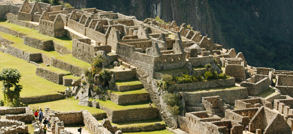
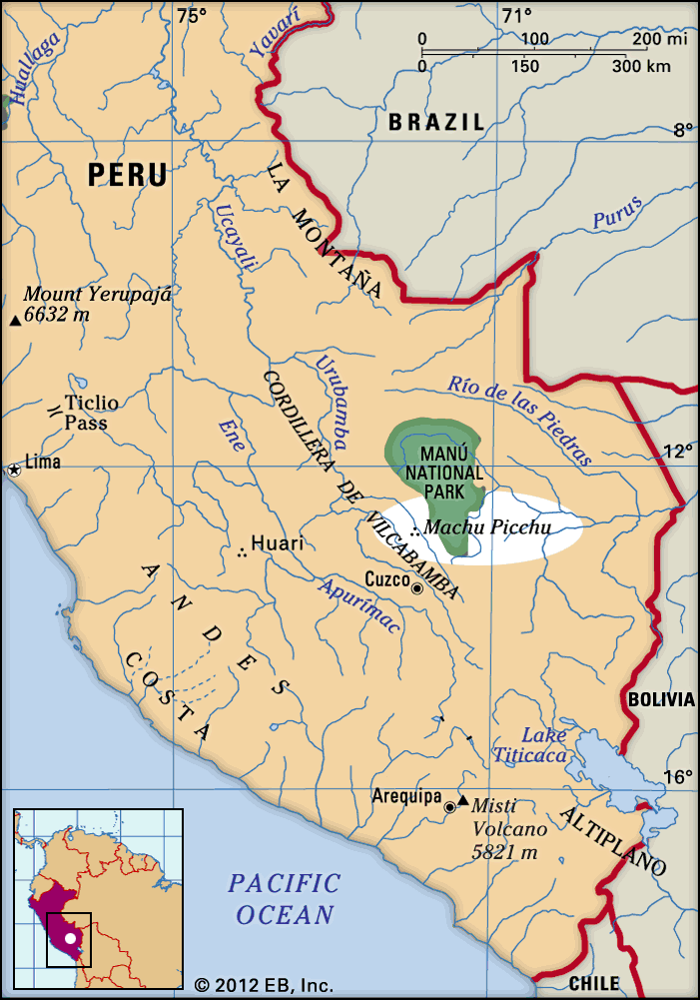

- Machu Picchu is a 15th-century Inca citadel located in the
Eastern Cordillera of southern Peru on a 2,430-meter (7,970 ft)
mountain ridge. It is located in the Machupicchu District
within Urubamba Province above the Sacred Valley, which is 80
kilometers (50 mi) northwest of Cuzco. The Urubamba River flows
past it, cutting through the Cordillera and creating a canyon
with a tropical mountain climate.
- For most speakers of English or Spanish, the first 'c' in
Picchu is silent. In English, the name is pronounced /ˌ
mɑːtʃuː ˈpiːtʃuː/ or /ˌmætʃuː ˈpiːktʃuː/, in Spanish as
[ˈmatʃu ˈpitʃu] or [ˈmatʃu ˈpiktʃu], and in Quechua
(Machu Pikchu) as [ˈmatʃʊ ˈpɪktʃʊ].

- The Incas, in contrast with the Mayans, had no written
language, and no European visited the site until the 19th
century, so far as is known. There are, therefore, no written
records of the site while it was in use. The names of the
buildings, their supposed uses, and their inhabitants are all
the product of modern archeologists, on the basis of physical
evidence, including tombs at the site.
- Machu Picchu was built in the classical Inca style, with
polished dry-stone walls. Its three primary structures are
the Intihuatana, the Temple of the Sun, and the Room of the
Three Windows. Most of the outlying buildings have been
reconstructed in order to give visitors a better idea of how
they originally appeared. By 1976, 30% of Machu Picchu had
been restored and restoration continues.
to read more, just visit:
"https://en.wikipedia.org/wiki/Machu_Picchu"